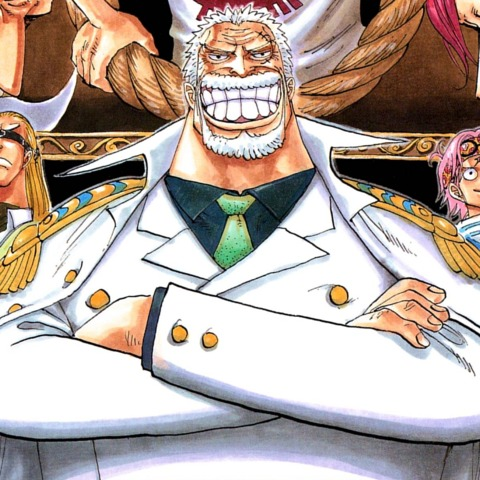

|  |
Monkey
|
Also known as "Garp the Fist", is an extremely famous and powerful Marine Vice Admiral. He is the father of Monkey D. Dragon, the paternal grandfather of Monkey D. Luffy, and the adoptive grandfather of Portgas D. Ace. He was responsible for overseeing Ace's birth and raising a young Luffy, before entrusting them both to the Dadan Family.
Garp is a major figure, along with Kong, Sengoku, Shiki, Silvers Rayleigh, Tsuru, and Whitebeard, from the times when Gol D. Roger, the "Pirate King", was still alive. His feats as a Marine soldier gained him immense notoriety and prestige, with his actions during the God Valley Incident in particular bestowing him the title of "Hero of the Marines". Notably, Garp was offered the rank of Admiral several times throughout his career, but he refused the offer of promotion every time due to his deep hatred and contempt for World Nobles. He is also the former mentor of Kuzan.
Garp was first introduced during the Diary of Koby-Meppo Cover Page Serial, where he took charge of both Koby and Helmeppo's training after its events. After the war and Ace's death, he became a Marine Instructor to train new recruits, though still retaining the rank of vice admiral, which is not known to the public and it appears as if he has retired. During his mission to rescue Koby from the Blackbeard Pirates, Garp was badly injured and forced to remain behind, and as a result, he has been declared "missing in action".
Due to his actions, he could be considered the main antagonist of the Post-Enies Lobby Arc. He is also a supporting antagonist in the Marineford Arc.
(shhh dont tell oda)